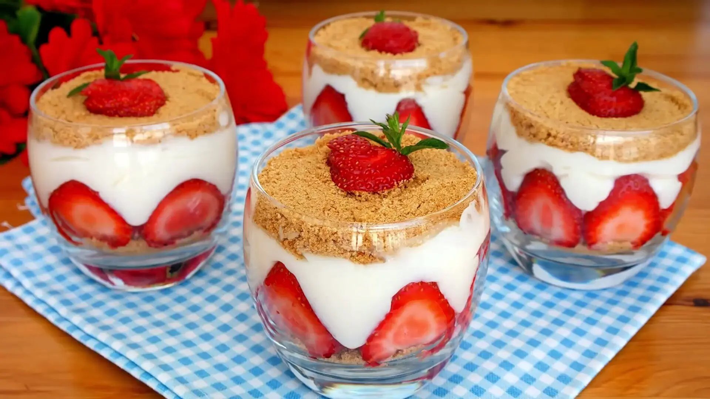

Magnolya Tatlısı Tarifi

İçindekiler:
- 1 paket kedi dili bisküvi
- 1 litre süt
- 2 yemek kaşığı un
- 1 su bardağı toz şeker
- 1 paket vanilin
- 1 yemek kaşığı nişasta
- 1 paket krem şanti
Yapılışı:
- İlk olarak sütü, unu, nişastayı ve şekeri bir tencereye koyun ve karıştırarak pişirin.
- Karışım koyulaşmaya başladığında vanilini ekleyin ve karıştırarak bir iki dakika daha pişirmeye devam edin.
- Soğuyan kremaya krem şantiyi ekleyin ve çırparak karıştırın.
- Bir kabın altına kedi dili bisküvilerini dizin ve üzerine kremalı karışımın bir kısmını dökün.
- Bu işlemi kat kat tekrar edin, en üst kata kremayı koyun.
- Magnolya tatlısını buzdolabında en az 4 saat soğutun.
- Soğuduktan sonra dilimleyin ve soğuk servis yapın. Afiyet olsun!
Geri Dön
 Tatlı Keşif
Tatlı Keşif
User9383764 (23 Eylül 2024 23:44):
Gerçekten çok lezzetli oldu, çok beğendik!
tatlıcanavarı.com (25 Ocak 2024 09:26):
Çok pratik bir tarif, mutlaka tekrar yapacağım!
nezihadere (3 Haziran 2024 15:38):
Şimdiye kadar denediğim en güzel magnolya!
muratgnc (21 Mart 2024 21:21):
Harika bir tatlı, herkes çok beğendi.